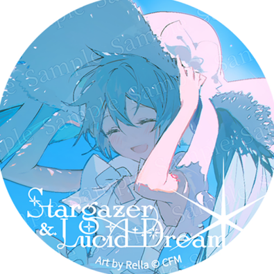

kong
.
首页
归档
关于
M I K U
(｡･ω･｡)ﾉ♡
个人主页 HI！HI！HI！~~
你好，
kong-zou
一个人。
查看文章
关于我
0
篇原创文章
0
累计字数
0
开始写作
最近文章
查看全部
分类
全部文章

kong
开发者 / 写作者
关于我
。
。
坐标
中国 · 郑州
职业
软件开发
邮箱
shenyou2024@outlook.com
kong-zou@outlook.com
shenyou2024@icloud.com
爱好
刷抖音/看网文/二次元
← 返回